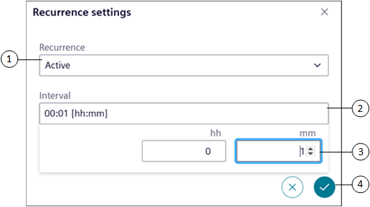
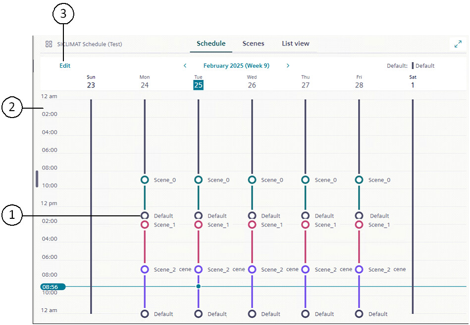
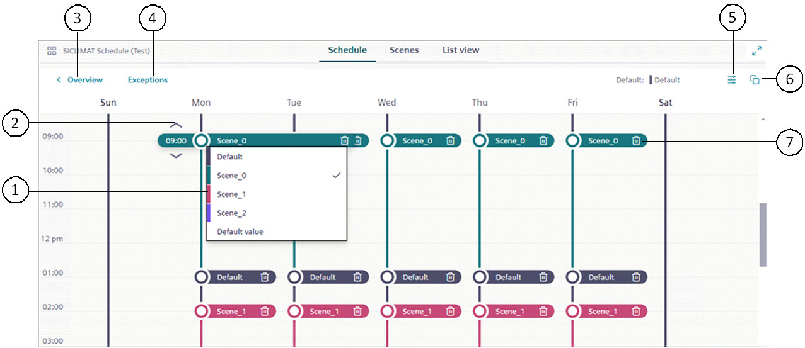

SICLIMAT Schedules
This section provides background information for managing SICLIMAT Schedules in the Flex Client. For related procedure, see SICLIMAT Schedules.
The SICLIMAT Schedules are used to configure schedule entry on SICLIMAT device. It provides the functionality to operate property values of particular data point.
Scene Editor
The Scene Editor functionality allows you to configure scenes for a schedule. Using scenes, you can create multiple operating modes for a schedule. You can associate data points with the scenes by adding data points with their properties. Each data point is a separate entity, and within a scene, you can add a data point for a device by configuring its multiple properties with specific values.
For example, if you have 3 scenes, Scene 0 (Office Opening Time), Scene 1 (Lunch Time), and Scene 2 (Office Closing Time) and you want to have different temperatures for each of the scenes, then you can associate 3 analog output points to each of the scenes.
For information related to conversion of Desigo CC Installed Client's SICLIMAT Schedule entries into the Flex Client's Scene and Exception entries, see Installed Client to Flex Client Scene Conversion.
Item | Name | Description |
1 | System Browser | Displays the list of objects that are created in the Installed Client. |
2 | Add | Creates new scenes and data points for the schedule. |
3 | | Displays options to save the schedule, save the schedule with a new name, discard changes, and delete the schedule. |
4 | Name | Displays the name of the selected scene. |
5 | Values | Displays the status of the output point associated with the scene and allows you to change the values. |
6 | Save | Saves the data point configuration. |
7 | | Displays options to save the schedule with a new name, discard changes, and delete the schedule. |
8 | | Displays the Recurrence option. If you click Recurrence, the Recurrence settings dialog box displays. |
9 | | Displays Activate or Deactivate options to configure the property. |
Recurrence settings
The Recurrence settings dialog box allows you to set the recurrence time for particular scene.
The schedule does not continue recurrence overnight.
For example, If a scheduled entry includes recurrence at midnight, the system recalibrates at 12:00 AM. After recalibration, the recurrence continues only if a switchpoint entry for that scene is configured for the next day at 12:00 AM. Otherwise, the recurrence stops for that scene, or the default scene continues it's recurrence, if it is active.

Item | Name | Description |
1 | Recurrence | Sets the recurrence status to Active or Inactive. |
2 | Interval | Allows you to select the scene recurrence time. |
3 | hh and mm | Allows you to set the recurrence time in hours and minutes. |
4 | | Sets the configured scene recurrence time. |
Schedule Workspace - View Mode
The View mode displays the weekly schedule and exception entries.

Item | Name | Description |
1 | Default | Indicates that all the points are in the deactivate state. |
2 | Schedule tab | Displays information on the weekly schedule and exception entries of the selected schedule. |
3 | Edit | Navigates to the Edit mode that allows you to add or edit weekly schedule and exception entries. |
Schedule Workspace - Edit Mode
In the Edit mode you can configure the weekly schedule entries.

Item | Name | Description |
1 | Scenes | Allows you to select a scene. |
2 | or | Allows you to set the scene at the desired time. |
3 | Overview | Navigate back to the Overview window where you can only view the schedule or exception entries but cannot edit them. |
4 | Exceptions | Displays the Calendar view and List view from where you can add exceptions to the schedule. |
5 | | Displays the Options dialog box that provides options to select the default value. You can also configure the effective period for the schedule. |
6 | | Allows copying of schedule entries to other days of the week. |
7 | | Deletes the scene. |